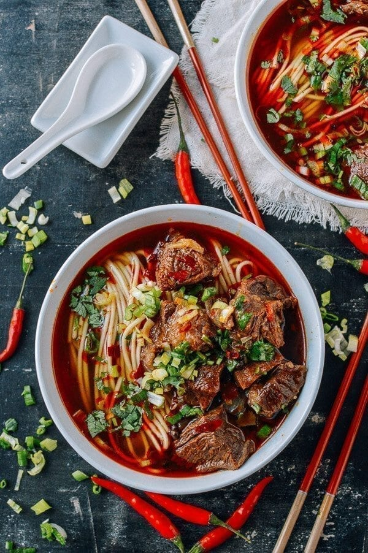

Spicy Beef Brisket Noodle Soup

Description:
A bowl of noodles in a well-spiced broth topped with tender beef cubes, spicy beef noodle soup is pungent,
fragrant and very comforting indeed.
Perfect for cold days where you are craving something hearty or just in the mood for something delicious!
- 600 g beef, cut in cubes - 21oz
- 2 tablespoon cooking oil
- 4 cloves garlic, minced
- 1500 ml hot water - 6½ cups
- 1 thumb-sized ginger
- 2 stalks scallions, cut in sections
- ½ teaspoon sugar
- Noodles
- Spinach - or pak choi / bok choy
- Fresh coriander, chopped
Directions:
-
Blanch the beef
Add beef cubes to a pot filled with water, Bring it to a full boil. Remove any impurities that appears
on the surface. Drain then put the beef back into the pot.
-
Prepare the soup
-
Heat up oil in a wok (or a deep frying pan) over medium heat. Stir in garlic, Sichuan chilli bean
paste and chili powder.
-
Cook until fragrant (do not burn). Pour in 1500ml (6½ cups) hot water. Cover and leave to simmer
for 5
minutes.
-
Simmer the beef
- Through a sieve, pour the spiced soup into the beef pot. Add ginger, scallions and all the other spices.
- Bring the soup to a boil then simmer for 1 to 1.5 hours. Once the beef becomes tender cooked, discard the
ginger, scallions and spices.
-
Cook the noodles
- Cook the noodles in another pot with plenty of water. At the end of the process, quickly blanch spinach (or
pak choi) in the same pot. Drain and rinse the noodles and vegetable under cold water for a few seconds.
-
Assemble the dish
- Place the noodles and vegetable in serving bowls. Pour in the broth then place the beef on top. Sprinkle
coriander to garnish. Serve immediately.